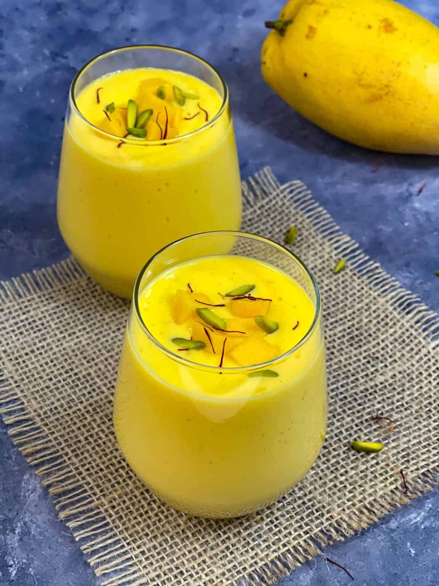

Mango Lassi

Description
Ingredients
- Chopped mango
- 1 cup plain yogurt
- 1/2 cup milk
- 4 teaspoons honey or sugar
- Ice (optional)
Steps
- Add ingredients to the blender
- Blend for 2 minutes.
- Optional: blend in some ice as well or serve over ice cubes
Source